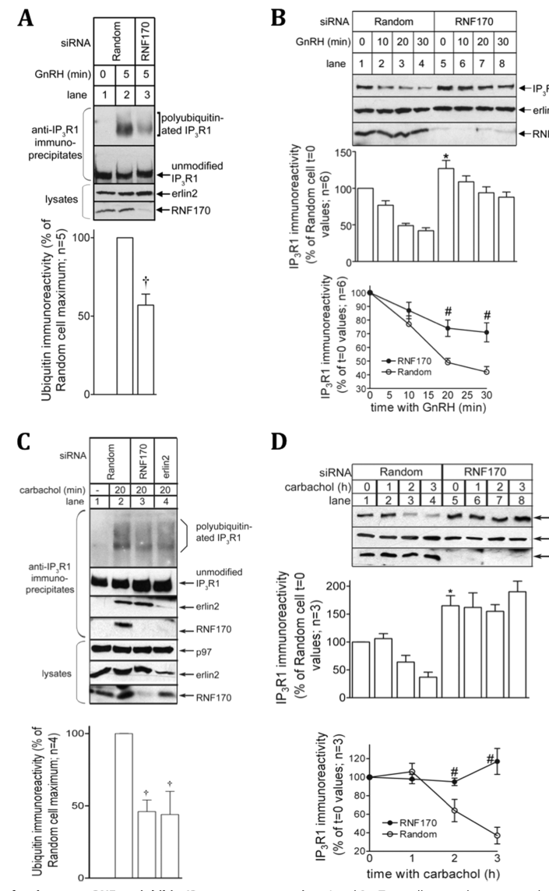

RNF170 is a multi-pass endoplasmic reticulum membrane RING-type E3 ubiquitin-protein ligase (EC 2.3.2.27, 258 aa) with three transmembrane helices and a large cytoplasmic loop carrying a C3HC4 RING domain (catalytic Cys-102/His-104). Its defining function is in ER-associated degradation (ERAD) of the inositol 1,4,5-trisphosphate receptor (ITPR1/IP3R): RNF170 is essential for stimulus-induced ubiquitination and degradation of activated ITPR1 and also contributes to ITPR1 turnover in resting cells, thereby controlling IP3R abundance and ER calcium-release signaling. To do this it is constitutively associated with the ERLIN1/ERLIN2 (SPFH-domain) complex, which recognizes activated IP3R and recruits RNF170 to ubiquitinate it. RNF170 also has a secondary, ligase-dependent immune-regulatory role: it binds Toll-like receptor 3 (TLR3) and builds K48-linked polyubiquitin chains on Lys-766 in the TLR3 TIR domain to drive its proteasomal degradation, selectively dampening TLR3-triggered innate immune responses. RNF170 is broadly expressed (including spinal cord); loss-of-function and RING-region missense variants cause autosomal dominant sensory ataxia (SNAX1) and autosomal recessive hereditary spastic paraplegia (SPG85), linking its ER ubiquitin-ligase activity to neuronal homeostasis. Its core localization and site of action is the ER membrane.
Definition: The chemical reactions and pathways resulting in the breakdown of an inositol 1,4,5-trisphosphate receptor (IP3R/ITPR), in which the activated receptor is ubiquitinated at the endoplasmic reticulum membrane and degraded via the ER-associated degradation (ERAD) pathway and the proteasome.
Justification: RNF170's defining, experimentally established function is the ERLIN1/ERLIN2-coupled ubiquitination and ERAD-mediated degradation of activated ITPR1/IP3R, which is currently not captured by any specific GO term in the GOA (only the generic ERAD pathway, GO:0036503, exists). A substrate-specific child term would better represent this well-characterized biology.
Parent term: ERAD pathway
Supporting Evidence:
| GO Term | Evidence | Action | Reason |
|---|---|---|---|
|
GO:0005789
endoplasmic reticulum membrane
|
IEA
GO_REF:0000044 |
ACCEPT |
Summary: Electronic transfer of ER membrane localization from the UniProt subcellular location; the core compartment and site of action for RNF170.
Reason: Correct core localization; RNF170 is a multi-pass ER membrane protein supported experimentally (IDA, PMID:31076723; PMID:21610068).
Supporting Evidence:
file:human/RNF170/RNF170-uniprot.txt
Endoplasmic reticulum membrane {ECO:0000269|PubMed:21610068, ECO:0000269|PubMed:31076723}
|
|
GO:0061630
ubiquitin protein ligase activity
|
IEA
GO_REF:0000120 |
ACCEPT |
Summary: Combined automated electronic assignment of RING-type ubiquitin ligase activity, the core molecular function of RNF170.
Reason: Correct core molecular function; supported by IDA (PMID:31076723), EC 2.3.2.27, and RING-region catalytic residues (C102S/H104A abolishes activity).
Supporting Evidence:
file:human/RNF170/RNF170-uniprot.txt
EC=2.3.2.27
|
|
GO:0005515
protein binding
|
IPI
PMID:25416956 A proteome-scale map of the human interactome network. |
KEEP AS NON CORE |
Summary: Interactome interaction with the proteasome subunit PSMA6, consistent with RNF170's role in proteasomal degradation. Bare protein binding is uninformative.
Reason: Records a real interaction (PSMA6) but bare protein binding is uninformative per curation guidelines.
Supporting Evidence:
file:human/RNF170/RNF170-uniprot.txt
Q96K19; P60900: PSMA6
|
|
GO:0005515
protein binding
|
IPI
Q96K19-5 PMID:32296183 A reference map of the human binary protein interactome. |
KEEP AS NON CORE |
Summary: Isoform-5 binary interactome interactions (e.g. SGTA, STARD3, TMEM109). Bare protein binding is uninformative; isoform 5 is a truncated splice variant.
Reason: High-throughput interactions on a truncated isoform; bare protein binding is uninformative and not a core function.
Supporting Evidence:
file:human/RNF170/RNF170-uniprot.txt
Q96K19-5; O43765: SGTA
|
|
GO:0016567
protein ubiquitination
|
IEA
GO_REF:0000041 |
KEEP AS NON CORE |
Summary: UniPathway-derived general protein ubiquitination process, a parent of the specific ERAD/degradative ubiquitination RNF170 performs.
Reason: Correct but generic; the specific ERAD/IP3R degradation and K48-ubiquitination annotations better capture the role.
Supporting Evidence:
file:human/RNF170/RNF170-uniprot.txt
PATHWAY: Protein modification; protein ubiquitination.
|
|
GO:0005789
endoplasmic reticulum membrane
|
IDA
PMID:31076723 E3 ubiquitin ligase RNF170 inhibits innate immune responses ... |
ACCEPT |
Summary: Direct experimental evidence that RNF170 acts at the ER membrane (TLR3 study); the core compartment for its ligase function.
Reason: Core localization/site of action with direct experimental support.
Supporting Evidence:
file:human/RNF170/RNF170-uniprot.txt
Endoplasmic reticulum membrane {ECO:0000269|PubMed:21610068, ECO:0000269|PubMed:31076723}
|
|
GO:0034140
negative regulation of toll-like receptor 3 signaling pathway
|
IDA
PMID:31076723 E3 ubiquitin ligase RNF170 inhibits innate immune responses ... |
KEEP AS NON CORE |
Summary: Direct evidence that RNF170 negatively regulates TLR3 signaling by degrading TLR3; a real but secondary immune-regulatory role.
Reason: Well supported (PMID:31076723, mainly murine cells) but a secondary role distinct from the core IP3R-ERAD function.
Supporting Evidence:
PMID:31076723
The genetic ablation of RNF170 selectively augmented TLR3-triggered innate immune responses both in vitro and in vivo
|
|
GO:0061630
ubiquitin protein ligase activity
|
IDA
PMID:31076723 E3 ubiquitin ligase RNF170 inhibits innate immune responses ... |
ACCEPT |
Summary: Direct experimental demonstration of RNF170 RING-dependent ubiquitin ligase activity (K48 ubiquitination of TLR3). Core molecular function.
Reason: Core molecular function with direct experimental (IDA) support; RING catalytic mutations (C102S/H104A) abolish activity.
Supporting Evidence:
PMID:31076723
RNF170 mediated the K48-linked polyubiquitination of K766 in the TIR domain of TLR3
|
|
GO:0070936
protein K48-linked ubiquitination
|
IDA
PMID:31076723 E3 ubiquitin ligase RNF170 inhibits innate immune responses ... |
ACCEPT |
Summary: Direct evidence that RNF170 builds K48-linked (degradative) polyubiquitin chains, demonstrated on TLR3. This degradative topology also underlies its IP3R/ERAD role.
Reason: Directly demonstrated K48-linked ubiquitination, the canonical degradative topology underlying RNF170's substrate-degradation functions.
Supporting Evidence:
PMID:31076723
RNF170 mediated the K48-linked polyubiquitination of K766 in the TIR domain of TLR3
|
|
GO:0036503
ERAD pathway
|
IDA
PMID:21610068 RNF170 protein, an endoplasmic reticulum membrane ubiquitin ... |
NEW |
Summary: RNF170 mediates ubiquitination and ERAD-dependent degradation of activated ITPR1/IP3R, its defining function (Lu et al. 2011). This core process is currently absent from the GOA and is proposed as a NEW annotation.
Reason: The IP3R/ITPR1 ERAD role with the ERLIN1/ERLIN2 complex is well established experimentally but not represented in the current GOA; it should be added.
Supporting Evidence:
file:human/RNF170/RNF170-uniprot.txt
E3 ubiquitin-protein ligase that plays an essential role in stimulus-induced inositol 1,4,5-trisphosphate receptor type 1 (ITPR1) ubiquitination and degradation
|
Q: Is the core IP3R/ITPR1 ERAD function (with the ERLIN1/ERLIN2 complex) conserved in human cells as established in the original studies, and should it be added to the GOA given that it is currently absent?
Q: How do SPG85/SNAX1 RING-region variants (e.g. C102R, R199C) mechanistically impair RNF170 ligase activity and IP3R/calcium homeostasis to cause neurodegeneration?
Experiment: Reconstitute or immunoprecipitate the RNF170-ERLIN1-ERLIN2 complex and assay stimulus-induced ITPR1 ubiquitination and degradation in WT vs RING-mutant (C102S/H104A) and SPG85-variant RNF170 to map the substrate lysines and chain topology on IP3R.
Experiment: Perform RNF170 knockout/rescue in neuronal cells with ER calcium imaging and quantitative proteomics to test whether IP3R stabilization and altered Ca2+ signaling underlie the sensory ataxia and spastic paraplegia phenotypes.
The research report should be a detailed narrative explaining the function, biological processes, and localization of the gene product. Citations should be given for all claims.
You should prioritize authoritative reviews and primary scientific literature when conducting research. You can supplement
this with annotations you find in gene/protein databases, but these can be outdated or inaccurate.
We are specifically interested in the primary function of the gene - for enzymes, what reaction is catalyzed, and what is the substrate specificity? For transporters, what is the substrate? For structural proteins or adapters, what is the broader structural role? For signaling molecules, what is the role in the pathway.
We are interested in where in or outside the cell the gene product carries out its function.
We are also interested in the signaling or biochemical pathways in which the gene functions. We are less interested in broad pleiotropic effects, except where these elucidate the precise role.
Include evidence where possible. We are interested in both experimental evidence as well as inference from structure, evolution, or bioinformatic analysis. Precise studies should be prioritized over high-throughput, where available.
The literature reviewed here matches the UniProt entry Q96K19 for Homo sapiens RNF170, described experimentally as an ER membrane, RING-type E3 ubiquitin ligase that regulates ER-associated degradation (ERAD) of activated inositol 1,4,5-trisphosphate receptors (IP3Rs) and is genetically linked to hereditary spastic paraplegia (HSP). (lu2011rnf170proteinan pages 4-5, wagner2019biallelicvariantsin pages 6-7)
RNF170 is a RING-HC E3 ubiquitin ligase: it promotes transfer of ubiquitin from an E2 enzyme to a substrate protein, typically creating polyubiquitin chains that control substrate fate (often proteasomal degradation). In vitro, immunopurified RNF170 catalyzes ubiquitin conjugation in the presence of E1 (UBE1), E2 (UbcH5b), and ubiquitin, producing a high-molecular-weight ubiquitin “smear,” consistent with intrinsic ligase activity. (lu2011rnf170proteinan pages 4-5, lu2011rnf170proteinan pages 3-4)
A key mechanistic validation is that mutating zinc-coordinating residues in the RING domain (Cys101/His103) abolishes ligase activity, establishing the catalytic dependence on the RING motif. (lu2011rnf170proteinan pages 3-4)
Activated IP3Rs undergo rapid down-regulation via the ubiquitin–proteasome pathway, a form of ERAD-like quality control applied to an activated signaling channel. RNF170 has been described as (at the time of foundational studies) the only E3 ligase directly demonstrated to mediate IP3R ubiquitination in this context, with recruitment to activated IP3Rs preceding robust polyubiquitination and downstream processing. (lu2011rnf170proteinan pages 5-6, lu2011rnf170proteinan pages 3-4)
ERLIN1/2 are ER membrane SPFH-family proteins that assemble into large oligomeric scaffolds in cholesterol-enriched ER nanodomains. These scaffolds act as platforms to recruit factors including RNF170, and (per 2024 work) can bridge RNF170 to other clients such as TMUB1-L, connecting ubiquitin machinery to ER lipid organization and secretory function. (veronese2024erlin12scaffoldsbridge pages 1-2, veronese2024erlin12scaffoldsbridge pages 12-12)
RNF170 is an integral ER membrane protein, with topology predictions and biochemical fractionation placing the N-terminus in the ER lumen and the RING domain/C-terminus in the cytosol, consistent with ubiquitination of cytosolic lysines on substrates such as IP3Rs. (lu2011rnf170proteinan pages 3-4, lu2011rnf170proteinan pages 4-5)
Foundational mechanistic work demonstrated that RNF170 rapidly associates with activated IP3R1, and depletion of RNF170 reduces stimulus-induced IP3R1 polyubiquitination and slows receptor down-regulation. (lu2011rnf170proteinan pages 4-5, lu2011rnf170proteinan pages 3-4)
Quantitatively, RNF170 knockdown reduced agonist-induced IP3R1 polyubiquitination to 57 ± 7% of control and inhibited IP3R1 down-regulation by ~50%, while also increasing basal IP3R1 levels. (lu2011rnf170proteinan pages 4-5, lu2011rnf170proteinan media b065ce9e)
Mechanistically, RNF170 recruitment to activated IP3Rs occurs via constitutive association with ERLIN1/2, which are required for efficient RNF170–IP3R coupling. (lu2011rnf170proteinan pages 8-9, lu2011rnf170proteinan pages 5-6)
A separate, well-developed mechanistic line of evidence (in murine systems) identifies RNF170 as a negative regulator of innate immunity through direct targeting of TLR3. RNF170 binds the TLR3 TIR domain and catalyzes K48-linked polyubiquitination at TLR3 Lys766, promoting proteasomal degradation; this requires intact RNF170 RING residues (C101/H103) and is blocked by proteasome inhibition (MG132), supported by CHX chase assays and in vivo phenotyping in Rnf170−/− mice. (song2020e3ubiquitinligase pages 6-7, song2020e3ubiquitinligase pages 7-9)
Because this primary study is performed in murine cells and mice, extension to human physiology should be made cautiously, although the TLR3 K766 site is noted as conserved between mouse and human in the primary study. (song2020e3ubiquitinligase pages 7-9)
RNF170 is reported to be constitutively associated with the ERLIN1/2 complex, which recruits RNF170 to activated IP3Rs to drive ubiquitination and proteasomal processing. (lu2011rnf170proteinan pages 8-9, lu2011rnf170proteinan pages 5-6)
Proteomics of ER-resident E3 ligase complexes has independently recovered RNF170 with high-confidence interactors including ERLIN1, ERLIN2, and ITPR3, supporting the recurring architecture of this module in ERAD/proteostasis networks. (lari2016resolutionofproteotoxic pages 111-115)
A major 2024 development is the proposal that ERLIN1/2 scaffolds bind a conserved luminal N-terminal motif present in RNF170 and the long isoform of TMUB1 (TMUB1-L), bridging these proteins in cholesterol-rich ER nanodomains. AlphaFold-Multimer modeling supports interaction interfaces between the conserved motifs and adjacent ERLIN subunits. (veronese2024erlin12scaffoldsbridge pages 4-6, veronese2024erlin12scaffoldsbridge pages 12-12)
Functionally, ERLIN loss (DKO) leads to increased cholesterol esterification and lipid droplet accumulation, ER tubule collapse, Golgi fragmentation, and impaired secretory trafficking, with rescue by ERLIN re-expression or pharmacologic inhibition of cholesterol esterification (SOAT1 inhibitor avasimibe). (veronese2024erlin12scaffoldsbridge pages 10-12, veronese2024erlin12scaffoldsbridge pages 12-12)
By controlling stimulus-dependent degradation of activated IP3Rs, RNF170 is positioned as a regulator of ER Ca2+ release signaling dynamics, linking receptor activation state to ERAD engagement. (wagner2019biallelicvariantsin pages 6-7, lu2011rnf170proteinan pages 5-6)
In patient-derived or engineered RNF170-deficient models, increased basal IP3R levels (cell-type-specific isoforms) and failure of stimulus-dependent IP3R reduction support the concept that RNF170 constrains IP3R abundance and signaling. (wagner2019biallelicvariantsin pages 6-7)
RNF170-mediated proteasomal removal of TLR3 reduces downstream IRF3/NF-κB/STAT1-linked transcriptional activity and cytokine production in TLR3 pathways, positioning RNF170 as a negative regulator of TLR3-dependent antiviral inflammation in murine models. (song2020e3ubiquitinligase pages 6-7, song2020e3ubiquitinligase pages 7-9)
2024 reviews summarize RNF170 in this role primarily by citing the 2020 primary study, without adding additional mechanistic detail in the excerpted sections. (wang2024hostfactorsmodulate pages 13-14, li2024thernabindingproteins pages 12-13)
A key primary genetics study provides evidence that biallelic RNF170 variants are a cause of autosomal recessive HSP, supported by functional validation across patient fibroblasts, neuronal cells, and zebrafish assays. (wagner2019biallelicvariantsin pages 6-7)
Mechanistically, patient-derived fibroblasts fail to show physiological stimulus-dependent degradation of IP3R-3, and RNF170 knockout neuronal SH-SY5Y cells show elevated basal IP3R-1 with rescue by re-expression of wild-type RNF170. (wagner2019biallelicvariantsin pages 6-7)
Quantitatively, this study reports zebrafish developmental phenotypes and statistical testing (e.g., embryo length and eye size differences with adjusted P < 0.0001) supporting functional impairment of tested patient variants relative to RNF170wt. (wagner2019biallelicvariantsin pages 6-7)
Open Targets disease–target evidence links RNF170 to hereditary spastic paraplegia and complex hereditary spastic paraplegia, with literature evidence pointing to PubMed ID 31636353 / PMC6803694. (OpenTargets Search: hereditary spastic paraplegia,spastic paraplegia,sensory ataxia,spinocerebellar ataxia,neuroaxonal dystrophy-RNF170)
A 2024 Trends in Neurosciences review emphasizes ER structure and protein quality-control pathways as central mechanisms in inherited neuropathies, HSP, and ataxias, and explicitly notes RNF170 as an E3 ligase associated with recessive HSP and inherited peripheral neuropathy. (vondel2024overarchingpathomechanismsin pages 5-8)
Consistent pathway-context evidence from 2024 human genetics (ERLIN1 series) supports the broader ERLIN1/2–RNF170–IP3R ERAD module as disease-relevant: in a cohort of 13 individuals with biallelic ERLIN1 variants (SPG62), the authors describe ERLIN1/2 as recruiting RNF170 to degrade activated IP3R1 and provide cohort-level statistics (e.g., mean onset 1.8 years; corpus callosum anomalies 5/13; founder splice variant in 6 individuals). Although ERLIN1 is not RNF170, these data reinforce the clinical relevance of the RNF170-centered module. (cogan2024biallelicvariantsin pages 1-6, cogan2024biallelicvariantsin pages 12-16)
Veronese et al. (Life Science Alliance; May 2024) propose that ERLIN scaffolds directly bind cholesterol and restrain cholesterol esterification, thereby maintaining ER cholesterol accessibility for ER→Golgi transport; the ERLIN scaffolds concurrently organize RNF170 and TMUB1-L via conserved luminal motifs. Loss of ERLINs increases cholesterol esterification (including CE 18:1), enlarges lipid droplets, fragments Golgi, and disrupts secretory trafficking and migration phenotypes; SOAT1 inhibition by avasimibe rescues multiple phenotypes. (veronese2024erlin12scaffoldsbridge pages 10-12, veronese2024erlin12scaffoldsbridge pages 12-12)
Quantitative details reported include proteomics showing a trend toward increased SOAT1 abundance (log2FC 0.40; q=0.07) and phenotyping with N=3 biological replicates and large cell counts (≥130 cells for lipid droplet size; ≥340 for Golgi fragmentation) analyzed by ANOVA with Tukey post hoc tests. (veronese2024erlin12scaffoldsbridge pages 12-12, veronese2024erlin12scaffoldsbridge pages 10-12)
Cogan et al. (Human Genetics; Oct 2024) frame ERLIN1/2 as ERAD organizers that associate with RNF170 to target activated IP3Rs, and expand genotype–phenotype characterization in ERLIN-related HSP. This strengthens the view (also consistent with RNF170 HSP genetics) that motor neurons are unusually sensitive to disruption of this ERAD-linked calcium signaling module. (cogan2024biallelicvariantsin pages 1-6, cogan2024biallelicvariantsin pages 12-16)
RNF170 is now a disease gene supported by primary genetics and functional validation for HSP, supporting its inclusion in neurogenetic diagnostic panels for spastic paraplegia/ataxia phenotypes and for variant interpretation workflows. (wagner2019biallelicvariantsin pages 6-7, vondel2024overarchingpathomechanismsin pages 5-8)
The RNF170-centered mechanism suggests two translationally relevant intervention layers:
1) IP3R signaling / ER Ca2+ homeostasis: human genetics and functional data prioritize the IP3R degradation/signaling axis as a candidate therapeutic pathway in HSP. (wagner2019biallelicvariantsin pages 6-7)
2) ER cholesterol esterification / secretory pathway: 2024 mechanistic work identifies cholesterol esterification control as a modifiable node in ERLIN-module dysfunction, with SOAT1 inhibition (avasimibe) rescuing cell phenotypes (lipid droplet size, Golgi morphology, and gene-expression readouts). This is not a direct RNF170-targeting therapy, but it provides a mechanism-based proof-of-concept for pharmacologic modulation of ERLIN–RNF170-associated ER nanodomain functions. (veronese2024erlin12scaffoldsbridge pages 10-12, veronese2024erlin12scaffoldsbridge pages 12-12)
A 2024 expert review in Trends in Neurosciences highlights ER structure and protein quality-control pathways (UPS/autophagy) as overarching mechanisms in inherited neuropathies, HSP, and ataxias, and includes RNF170 among implicated E3 ligases, supporting a convergent “ER homeostasis / QC” framing for RNF170-related disease mechanisms. (vondel2024overarchingpathomechanismsin pages 5-8)
Genetics-focused 2024 work on ERLIN1 (SPG62) similarly emphasizes that the ERLIN1/2–RNF170 module is expected to impair IP3R1 turnover and Ca2+ signaling, providing additional disease-mechanism coherence at the pathway level. (cogan2024biallelicvariantsin pages 12-16)
The following table consolidates the most evidence-supported statements for functional annotation.
| Category | Summary |
|---|---|
| Identity/domains | - Human RNF170 corresponds to UniProt Q96K19, a RING-type E3 ubiquitin ligase studied as an ER-membrane regulator of protein turnover and signaling. - Foundational work defines RNF170 as a 257 aa RING-HC protein with catalytic dependence on Cys101/His103; this matches the UniProt RING-domain annotation and ER-associated function. (lu2011rnf170proteinan pages 4-5, lu2011rnf170proteinan pages 3-4) |
| Localization/topology | - RNF170 is an integral endoplasmic reticulum (ER) membrane protein. - Topology predictions and biochemical fractionation place its N-terminus in the ER lumen and its RING domain/C-terminus in the cytosol, positioning the catalytic machinery to ubiquitinate cytosolic receptor lysines. - RNF170 localizes in ERLIN-positive cholesterol-rich ER nanodomains. (lu2011rnf170proteinan pages 4-5, lu2011rnf170proteinan pages 3-4, veronese2024erlin12scaffoldsbridge pages 1-2) |
| Core enzymatic activity | - RNF170 catalyzes E3 ubiquitin transfer in vitro using UBE1 + UbcH5b and ubiquitin, generating a high-molecular-weight ubiquitin smear typical of ligase activity. - Catalysis is lost with RING mutant C101S/H103A, confirming dependence on the RING domain. - Functionally, RNF170 promotes proteasome-directed ER-associated degradation (ERAD) of selected membrane/signaling proteins. (lu2011rnf170proteinan pages 4-5, lu2011rnf170proteinan pages 3-4, song2020e3ubiquitinligase pages 6-7) |
| Key substrates | - Best-supported human substrate class: activated IP3 receptors (IP3Rs), especially IP3R1/IP3R3, which undergo RNF170-dependent ubiquitination and degradation after stimulation. - In murine innate immunity studies, RNF170 also targets TLR3, catalyzing K48-linked polyubiquitination at K766 to drive proteasomal degradation. - TLR3 regulation is strongly supported experimentally, but species context should be noted because the primary paper is in murine cells/mice. (wagner2019biallelicvariantsin pages 6-7, lu2011rnf170proteinan pages 4-5, song2020e3ubiquitinligase pages 6-7, song2020e3ubiquitinligase pages 1-2, song2020e3ubiquitinligase pages 7-9) |
| Key interactors/complex | - RNF170 is constitutively associated with the ERLIN1/2 complex, which recruits it to activated IP3Rs. - It is also found in complexes containing p97/VCP-associated ERAD machinery and, in 2024 work, TMUB1-L bridged by ERLIN scaffolds. - Proteomics and co-IP studies repeatedly enrich ERLIN1, ERLIN2, ITPR3, TMUB1, TMEM259 with RNF170-centered complexes. (lu2011rnf170proteinan pages 8-9, lari2016resolutionofproteotoxic pages 111-115, veronese2024erlin12scaffoldsbridge pages 1-2, veronese2024erlin12scaffoldsbridge pages 12-12) |
| Pathways | - RNF170 acts in ERAD/proteostasis, especially stimulus-coupled degradation of activated IP3Rs. - Through IP3R turnover, RNF170 regulates ER Ca2+ release signaling and is therefore connected to neurodegeneration-relevant calcium homeostasis pathways. - Separate immune work places RNF170 in TLR3 innate immune signaling as a negative regulator limiting IRF3/NF-kB/STAT1 outputs by degrading TLR3. (wagner2019biallelicvariantsin pages 6-7, lu2011rnf170proteinan pages 5-6, song2020e3ubiquitinligase pages 6-7, vondel2024overarchingpathomechanismsin pages 5-8) |
| Disease associations | - Biallelic loss-of-function RNF170 variants cause autosomal recessive hereditary spastic paraplegia (HSP), with Open Targets evidence mapped to hereditary/complex HSP. - Earlier literature also linked a dominant sensory ataxia phenotype to RNF170 mutation, and mouse knockout models show age-dependent gait abnormalities. - Expert 2024 synthesis places RNF170 within an ER homeostasis/quality-control disease module shared across HSP, ataxia, and related neurodegenerative disorders. (wagner2019biallelicvariantsin pages 6-7, lu2011rnf170proteinan pages 8-9, OpenTargets Search: hereditary spastic paraplegia,spastic paraplegia,sensory ataxia,spinocerebellar ataxia,neuroaxonal dystrophy-RNF170, vondel2024overarchingpathomechanismsin pages 5-8) |
| Recent 2024 developments | - Veronese et al. 2024 propose that ERLIN1/2 ring-like scaffolds bind a conserved luminal motif in RNF170 and TMUB1-L, organizing them in cholesterol-rich ER nanodomains. - This work expands RNF170 biology beyond IP3R degradation by linking the ERLIN–RNF170 module to cholesterol esterification control, Golgi morphology, and secretory pathway regulation. - 2024 disease reviews and genetics papers further emphasize the ERLIN1/2–RNF170–IP3R axis as a recurrent neurogenetic mechanism in spastic paraplegia/ataxia. (veronese2024erlin12scaffoldsbridge pages 12-12, veronese2024erlin12scaffoldsbridge pages 4-6, veronese2024erlin12scaffoldsbridge pages 10-12, cogan2024biallelicvariantsin pages 1-6, vondel2024overarchingpathomechanismsin pages 5-8) |
| Quantitative data points | - RNF170 knockdown reduced agonist-induced IP3R1 polyubiquitination to 57 ± 7% of control, inhibited IP3R1 down-regulation by roughly ~50%, and increased basal IP3R1 by ~27 ± 11%. (lu2011rnf170proteinan pages 4-5) - In RNF170-deficient models, IP3R3 rose by about ~4-fold in patient fibroblasts and IP3R1 by ~1.8-fold in RNF170-knockout SH-SY5Y cells. (gehweiler2024rnf170anoveldisease pages 68-72) - 2024 ERLIN-loss proteomics/lipidomics reported SOAT1 log2FC = 0.40, q = 0.07 and phenotyping with N = 3 biological replicates, including ≥130 cells for lipid-droplet size and ≥340 cells for Golgi fragmentation. (veronese2024erlin12scaffoldsbridge pages 12-12, veronese2024erlin12scaffoldsbridge pages 10-12) |
Table: This table condenses the key verified facts about human RNF170 (UniProt Q96K19), including its identity, ER localization, E3 ligase function, substrates, complexes, disease relevance, and notable 2024 advances. It is useful as a quick-reference annotation scaffold anchored to specific evidence contexts.
A figure supporting RNF170’s quantitative effect on IP3R1 ubiquitination and down-regulation is available from Lu et al. 2011 (Figure 5A-B). (lu2011rnf170proteinan media b065ce9e)
References
(lu2011rnf170proteinan pages 4-5): Justine P. Lu, Yuan Wang, Danielle A. Sliter, Margaret M.P. Pearce, and Richard J.H. Wojcikiewicz. Rnf170 protein, an endoplasmic reticulum membrane ubiquitin ligase, mediates inositol 1,4,5-trisphosphate receptor ubiquitination and degradation. Journal of Biological Chemistry, 286:24426-24433, Jul 2011. URL: https://doi.org/10.1074/jbc.m111.251983, doi:10.1074/jbc.m111.251983. This article has 134 citations and is from a domain leading peer-reviewed journal.
(wagner2019biallelicvariantsin pages 6-7): Matias Wagner, Daniel P. S. Osborn, Ina Gehweiler, Maike Nagel, Ulrike Ulmer, Somayeh Bakhtiari, Rim Amouri, Reza Boostani, Faycal Hentati, Maryam M. Hockley, Benedikt Hölbling, Thomas Schwarzmayr, Ehsan Ghayoor Karimiani, Christoph Kernstock, Reza Maroofian, Wolfgang Müller-Felber, Ege Ozkan, Sergio Padilla-Lopez, Selina Reich, Jennifer Reichbauer, Hossein Darvish, Neda Shahmohammadibeni, Abbas Tafakhori, Katharina Vill, Stephan Zuchner, Michael C. Kruer, Juliane Winkelmann, Yalda Jamshidi, and Rebecca Schüle. Bi-allelic variants in rnf170 are associated with hereditary spastic paraplegia. Nature Communications, Oct 2019. URL: https://doi.org/10.1038/s41467-019-12620-9, doi:10.1038/s41467-019-12620-9. This article has 62 citations and is from a highest quality peer-reviewed journal.
(lu2011rnf170proteinan pages 3-4): Justine P. Lu, Yuan Wang, Danielle A. Sliter, Margaret M.P. Pearce, and Richard J.H. Wojcikiewicz. Rnf170 protein, an endoplasmic reticulum membrane ubiquitin ligase, mediates inositol 1,4,5-trisphosphate receptor ubiquitination and degradation. Journal of Biological Chemistry, 286:24426-24433, Jul 2011. URL: https://doi.org/10.1074/jbc.m111.251983, doi:10.1074/jbc.m111.251983. This article has 134 citations and is from a domain leading peer-reviewed journal.
(lu2011rnf170proteinan pages 5-6): Justine P. Lu, Yuan Wang, Danielle A. Sliter, Margaret M.P. Pearce, and Richard J.H. Wojcikiewicz. Rnf170 protein, an endoplasmic reticulum membrane ubiquitin ligase, mediates inositol 1,4,5-trisphosphate receptor ubiquitination and degradation. Journal of Biological Chemistry, 286:24426-24433, Jul 2011. URL: https://doi.org/10.1074/jbc.m111.251983, doi:10.1074/jbc.m111.251983. This article has 134 citations and is from a domain leading peer-reviewed journal.
(veronese2024erlin12scaffoldsbridge pages 1-2): Matteo Veronese, Sebastian Kallabis, Alexander Tobias Kaczmarek, Anushka Das, Lennart Robers, Simon Schumacher, Alessia Lofrano, Susanne Brodesser, Stefan Müller, Kay Hofmann, Marcus Krüger, and Elena I Rugarli. Erlin1/2 scaffolds bridge tmub1 and rnf170 and restrict cholesterol esterification to regulate the secretory pathway. Life Science Alliance, 7:e202402620, May 2024. URL: https://doi.org/10.26508/lsa.202402620, doi:10.26508/lsa.202402620. This article has 8 citations and is from a peer-reviewed journal.
(veronese2024erlin12scaffoldsbridge pages 12-12): Matteo Veronese, Sebastian Kallabis, Alexander Tobias Kaczmarek, Anushka Das, Lennart Robers, Simon Schumacher, Alessia Lofrano, Susanne Brodesser, Stefan Müller, Kay Hofmann, Marcus Krüger, and Elena I Rugarli. Erlin1/2 scaffolds bridge tmub1 and rnf170 and restrict cholesterol esterification to regulate the secretory pathway. Life Science Alliance, 7:e202402620, May 2024. URL: https://doi.org/10.26508/lsa.202402620, doi:10.26508/lsa.202402620. This article has 8 citations and is from a peer-reviewed journal.
(lu2011rnf170proteinan media b065ce9e): Justine P. Lu, Yuan Wang, Danielle A. Sliter, Margaret M.P. Pearce, and Richard J.H. Wojcikiewicz. Rnf170 protein, an endoplasmic reticulum membrane ubiquitin ligase, mediates inositol 1,4,5-trisphosphate receptor ubiquitination and degradation. Journal of Biological Chemistry, 286:24426-24433, Jul 2011. URL: https://doi.org/10.1074/jbc.m111.251983, doi:10.1074/jbc.m111.251983. This article has 134 citations and is from a domain leading peer-reviewed journal.
(lu2011rnf170proteinan pages 8-9): Justine P. Lu, Yuan Wang, Danielle A. Sliter, Margaret M.P. Pearce, and Richard J.H. Wojcikiewicz. Rnf170 protein, an endoplasmic reticulum membrane ubiquitin ligase, mediates inositol 1,4,5-trisphosphate receptor ubiquitination and degradation. Journal of Biological Chemistry, 286:24426-24433, Jul 2011. URL: https://doi.org/10.1074/jbc.m111.251983, doi:10.1074/jbc.m111.251983. This article has 134 citations and is from a domain leading peer-reviewed journal.
(song2020e3ubiquitinligase pages 6-7): Xiaoqi Song, Shuo Liu, Wen-die Wang, Zhong-fei Ma, Xuetao Cao, and Minghong Jiang. E3 ubiquitin ligase rnf170 inhibits innate immune responses by targeting and degrading tlr3 in murine cells. Cellular & Molecular Immunology, 17:865-874, May 2020. URL: https://doi.org/10.1038/s41423-019-0236-y, doi:10.1038/s41423-019-0236-y. This article has 28 citations and is from a peer-reviewed journal.
(song2020e3ubiquitinligase pages 7-9): Xiaoqi Song, Shuo Liu, Wen-die Wang, Zhong-fei Ma, Xuetao Cao, and Minghong Jiang. E3 ubiquitin ligase rnf170 inhibits innate immune responses by targeting and degrading tlr3 in murine cells. Cellular & Molecular Immunology, 17:865-874, May 2020. URL: https://doi.org/10.1038/s41423-019-0236-y, doi:10.1038/s41423-019-0236-y. This article has 28 citations and is from a peer-reviewed journal.
(lari2016resolutionofproteotoxic pages 111-115): F Lari. Resolution of proteotoxic stress in the endoplasmic reticulum by ubiquitin ligase complexes. Unknown journal, 2016.
(veronese2024erlin12scaffoldsbridge pages 4-6): Matteo Veronese, Sebastian Kallabis, Alexander Tobias Kaczmarek, Anushka Das, Lennart Robers, Simon Schumacher, Alessia Lofrano, Susanne Brodesser, Stefan Müller, Kay Hofmann, Marcus Krüger, and Elena I Rugarli. Erlin1/2 scaffolds bridge tmub1 and rnf170 and restrict cholesterol esterification to regulate the secretory pathway. Life Science Alliance, 7:e202402620, May 2024. URL: https://doi.org/10.26508/lsa.202402620, doi:10.26508/lsa.202402620. This article has 8 citations and is from a peer-reviewed journal.
(veronese2024erlin12scaffoldsbridge pages 10-12): Matteo Veronese, Sebastian Kallabis, Alexander Tobias Kaczmarek, Anushka Das, Lennart Robers, Simon Schumacher, Alessia Lofrano, Susanne Brodesser, Stefan Müller, Kay Hofmann, Marcus Krüger, and Elena I Rugarli. Erlin1/2 scaffolds bridge tmub1 and rnf170 and restrict cholesterol esterification to regulate the secretory pathway. Life Science Alliance, 7:e202402620, May 2024. URL: https://doi.org/10.26508/lsa.202402620, doi:10.26508/lsa.202402620. This article has 8 citations and is from a peer-reviewed journal.
(wang2024hostfactorsmodulate pages 13-14): Jingjing Wang, Yirui Dong, Xuewei Zheng, Haodi Ma, Mengjiao Huang, Dongliao Fu, Jiangbo Liu, and Qinan Yin. Host factors modulate virus-induced ifn production via pattern recognition receptors. Journal of Inflammation Research, 17:3737-3752, Jun 2024. URL: https://doi.org/10.2147/jir.s455035, doi:10.2147/jir.s455035. This article has 6 citations and is from a peer-reviewed journal.
(li2024thernabindingproteins pages 12-13): Jianguo Li, Jingge Yu, Ao Shen, Suwen Lai, Zhiping Liu, and Tian-Sheng He. The rna-binding proteins regulate innate antiviral immune signaling by modulating pattern recognition receptors. Virology Journal, Sep 2024. URL: https://doi.org/10.1186/s12985-024-02503-x, doi:10.1186/s12985-024-02503-x. This article has 13 citations and is from a peer-reviewed journal.
(OpenTargets Search: hereditary spastic paraplegia,spastic paraplegia,sensory ataxia,spinocerebellar ataxia,neuroaxonal dystrophy-RNF170): Open Targets Query (hereditary spastic paraplegia,spastic paraplegia,sensory ataxia,spinocerebellar ataxia,neuroaxonal dystrophy-RNF170, 2 results). Buniello, A. et al. (2025). Open Targets Platform: facilitating therapeutic hypotheses building in drug discovery. Nucleic Acids Research.
(vondel2024overarchingpathomechanismsin pages 5-8): Liedewei Van de Vondel, Jonathan De Winter, Vincent Timmerman, and Jonathan Baets. Overarching pathomechanisms in inherited peripheral neuropathies, spastic paraplegias, and cerebellar ataxias. Mar 2024. URL: https://doi.org/10.1016/j.tins.2024.01.004, doi:10.1016/j.tins.2024.01.004. This article has 11 citations and is from a highest quality peer-reviewed journal.
(cogan2024biallelicvariantsin pages 1-6): Guillaume Cogan, Maha S. Zaki, Mahmoud Issa, Boris Keren, Marine Guillaud-Bataille, Florence Renaldo, Arnaud Isapof, Pauline Lallemant, Giovanni Stevanin, Lena Guillot-Noel, Thomas Courtin, Julien Buratti, Cécile Freihuber, Joseph G. Gleeson, Robyn Howarth, Alexandra Durr, Jean-Madeleine de Sainte Agathe, and Cyril Mignot. Biallelic variants in erlin1: a series of 13 individuals with spastic paraparesis. Human genetics, 143:1353-1362, Oct 2024. URL: https://doi.org/10.1007/s00439-024-02702-0, doi:10.1007/s00439-024-02702-0. This article has 3 citations and is from a peer-reviewed journal.
(cogan2024biallelicvariantsin pages 12-16): Guillaume Cogan, Maha S. Zaki, Mahmoud Issa, Boris Keren, Marine Guillaud-Bataille, Florence Renaldo, Arnaud Isapof, Pauline Lallemant, Giovanni Stevanin, Lena Guillot-Noel, Thomas Courtin, Julien Buratti, Cécile Freihuber, Joseph G. Gleeson, Robyn Howarth, Alexandra Durr, Jean-Madeleine de Sainte Agathe, and Cyril Mignot. Biallelic variants in erlin1: a series of 13 individuals with spastic paraparesis. Human genetics, 143:1353-1362, Oct 2024. URL: https://doi.org/10.1007/s00439-024-02702-0, doi:10.1007/s00439-024-02702-0. This article has 3 citations and is from a peer-reviewed journal.
(song2020e3ubiquitinligase pages 1-2): Xiaoqi Song, Shuo Liu, Wen-die Wang, Zhong-fei Ma, Xuetao Cao, and Minghong Jiang. E3 ubiquitin ligase rnf170 inhibits innate immune responses by targeting and degrading tlr3 in murine cells. Cellular & Molecular Immunology, 17:865-874, May 2020. URL: https://doi.org/10.1038/s41423-019-0236-y, doi:10.1038/s41423-019-0236-y. This article has 28 citations and is from a peer-reviewed journal.
(gehweiler2024rnf170anoveldisease pages 68-72): I Gehweiler. Rnf170-a novel disease gene causing hereditary spastic paraplegia. Unknown journal, 2024.

UniProt: Q96K19 (RN170_HUMAN), 258 aa, gene RNF170. HGNC:25358. Chromosome 8. Multi-pass ER membrane protein.
RNF170 is a multi-pass ER-membrane RING-type E3 ubiquitin ligase (EC 2.3.2.27). C3HC4 RING domain (ZN_FING 87-130; catalytic residues Cys-102/His-104; C102S/H104A double mutant completely abolishes ligase activity). Three transmembrane helices (25-45, 202-222, 224-244) anchor it in the ER membrane with a large cytoplasmic loop (46-201) carrying the RING.
[file:human/RNF170/RNF170-uniprot.txt "E3 ubiquitin-protein ligase that plays an essential role in stimulus-induced inositol 1,4,5-trisphosphate receptor type 1 (ITPR1) ubiquitination and degradation"]
[file:human/RNF170/RNF170-uniprot.txt "MUTAGEN 102 ... C->S: Complete loss of E3 ligase activity; when associated with A-104"]
RNF170 is essential for stimulus-induced ubiquitination and ERAD-mediated degradation of the inositol 1,4,5-trisphosphate receptor (ITPR1/IP3R), and also for ITPR1 turnover in resting cells. It is constitutively associated with the ERLIN1/ERLIN2 complex and interacts with activated ITPR1. This is the founding/defining function (Lu et al. 2011, PMID:21610068).
[file:human/RNF170/RNF170-uniprot.txt "Also involved in ITPR1 turnover in resting cells"]
[file:human/RNF170/RNF170-uniprot.txt "Constitutively associated with the ERLIN1/ERLIN 2 complex. Interacts with activated ITPR1"]
Note: This IP3R/ERLIN role is NOT explicitly represented in the current GOA (the GOA has no ITPR1-ERAD term). It is captured here in description, core_functions, and a proposed_new_term, with provenance from the UniProt record / PMID:21610068. PMID:21610068 is not in the cached publications/ folder; supporting text is taken verbatim from the UniProt file.
RNF170 binds TLR3 and mediates K48-linked polyubiquitination of K766 in the TLR3 TIR domain, promoting proteasomal degradation and selectively inhibiting TLR3-triggered innate immune responses (Song et al. 2020, PMID:31076723; mainly murine cells). This is the source of the K48 ubiquitination, negative regulation of TLR3 signaling, and IDA ligase-activity / ER-membrane annotations in the GOA.
Mutations cause autosomal dominant sensory ataxia (SNAX1; R199C) and autosomal recessive hereditary spastic paraplegia (SPG85; e.g. C102R, C107W). RING-region (C102) variants link the ligase activity to neurodegeneration, consistent with its role in IP3R/ER calcium-channel homeostasis.
ER membrane (PMID:21610068, PMID:31076723), multi-pass. This is the core compartment.
NEW for exactly this reason, matching the dossier goa_status=new_to_goa for GO:0036503. GOA confirmed to lack GO:0036503 and GO:0000151. No contradictions.ER proteostasis|...|ERAD|...|ERAD-associated RING E3 ligase; UPS|...|RING|with transmembrane domain|ER; UPS|...|idiosyncratic RING complex|RNF170 / ERLIN complex|catalytic / RING, transmembrane. PN-node mapping: ERAD-RING subtype→GO:0061630 (in_goa); ERAD type→GO:0036503 (new_to_goa); ERAD group→GO:0036503 exact (new_to_goa); RING group→GO:0061630 (in_goa); RNF170/ERLIN-complex group→GO:0000151 ubiquitin ligase complex (new_to_goa). Projected: GO:0036503×2 (new), GO:0061630×2 (in GOA), GO:0000151 (new).NEW for exactly this reason, matching the dossier goa_status=new_to_goa for GO:0036503. GOA confirmed to lack GO:0036503 and GO:0000151. No contradictions.This file is generated from the current PROTEOSTASIS phase-1 dossier and local gene-review artifacts. Edit the source review, PN mapping, or dossier rather than this generated note when correcting the underlying curation.
id: Q96K19
gene_symbol: RNF170
product_type: PROTEIN
status: COMPLETE
taxon:
id: NCBITaxon:9606
label: Homo sapiens
description: >-
RNF170 is a multi-pass endoplasmic reticulum membrane RING-type E3
ubiquitin-protein ligase (EC 2.3.2.27, 258 aa) with three transmembrane
helices and a large cytoplasmic loop carrying a C3HC4 RING domain (catalytic
Cys-102/His-104). Its defining function is in ER-associated degradation (ERAD)
of the inositol 1,4,5-trisphosphate receptor (ITPR1/IP3R): RNF170 is essential
for stimulus-induced ubiquitination and degradation of activated ITPR1 and also
contributes to ITPR1 turnover in resting cells, thereby controlling IP3R
abundance and ER calcium-release signaling. To do this it is constitutively
associated with the ERLIN1/ERLIN2 (SPFH-domain) complex, which recognizes
activated IP3R and recruits RNF170 to ubiquitinate it. RNF170 also has a
secondary, ligase-dependent immune-regulatory role: it binds Toll-like receptor
3 (TLR3) and builds K48-linked polyubiquitin chains on Lys-766 in the TLR3 TIR
domain to drive its proteasomal degradation, selectively dampening
TLR3-triggered innate immune responses. RNF170 is broadly expressed (including
spinal cord); loss-of-function and RING-region missense variants cause
autosomal dominant sensory ataxia (SNAX1) and autosomal recessive hereditary
spastic paraplegia (SPG85), linking its ER ubiquitin-ligase activity to neuronal
homeostasis. Its core localization and site of action is the ER membrane.
alternative_products:
- name: '1'
id: Q96K19-1
- name: '2'
id: Q96K19-2
sequence_note: VSP_023856
- name: '3'
id: Q96K19-3
sequence_note: VSP_023855, VSP_023857
- name: '4'
id: Q96K19-4
sequence_note: VSP_023851, VSP_023852
- name: '5'
id: Q96K19-5
sequence_note: VSP_023853, VSP_023854
- name: '6'
id: Q96K19-6
sequence_note: VSP_044556
existing_annotations:
- term:
id: GO:0005789
label: endoplasmic reticulum membrane
evidence_type: IEA
original_reference_id: GO_REF:0000044
qualifier: located_in
review:
summary: Electronic transfer of ER membrane localization from the UniProt subcellular location; the core compartment and site of action for RNF170.
action: ACCEPT
reason: Correct core localization; RNF170 is a multi-pass ER membrane protein supported experimentally (IDA, PMID:31076723; PMID:21610068).
supported_by:
- reference_id: file:human/RNF170/RNF170-uniprot.txt
supporting_text: 'Endoplasmic reticulum membrane {ECO:0000269|PubMed:21610068, ECO:0000269|PubMed:31076723}'
- term:
id: GO:0061630
label: ubiquitin protein ligase activity
evidence_type: IEA
original_reference_id: GO_REF:0000120
qualifier: enables
review:
summary: Combined automated electronic assignment of RING-type ubiquitin ligase activity, the core molecular function of RNF170.
action: ACCEPT
reason: Correct core molecular function; supported by IDA (PMID:31076723), EC 2.3.2.27, and RING-region catalytic residues (C102S/H104A abolishes activity).
supported_by:
- reference_id: file:human/RNF170/RNF170-uniprot.txt
supporting_text: EC=2.3.2.27
- term:
id: GO:0005515
label: protein binding
evidence_type: IPI
original_reference_id: PMID:25416956
qualifier: enables
review:
summary: Interactome interaction with the proteasome subunit PSMA6, consistent with RNF170's role in proteasomal degradation. Bare protein binding is uninformative.
action: KEEP_AS_NON_CORE
reason: Records a real interaction (PSMA6) but bare protein binding is uninformative per curation guidelines.
supported_by:
- reference_id: file:human/RNF170/RNF170-uniprot.txt
supporting_text: 'Q96K19; P60900: PSMA6'
- term:
id: GO:0005515
label: protein binding
evidence_type: IPI
original_reference_id: PMID:32296183
qualifier: enables
isoform: Q96K19-5
review:
summary: Isoform-5 binary interactome interactions (e.g. SGTA, STARD3, TMEM109). Bare protein binding is uninformative; isoform 5 is a truncated splice variant.
action: KEEP_AS_NON_CORE
reason: High-throughput interactions on a truncated isoform; bare protein binding is uninformative and not a core function.
supported_by:
- reference_id: file:human/RNF170/RNF170-uniprot.txt
supporting_text: 'Q96K19-5; O43765: SGTA'
- term:
id: GO:0016567
label: protein ubiquitination
evidence_type: IEA
original_reference_id: GO_REF:0000041
qualifier: involved_in
review:
summary: UniPathway-derived general protein ubiquitination process, a parent of the specific ERAD/degradative ubiquitination RNF170 performs.
action: KEEP_AS_NON_CORE
reason: Correct but generic; the specific ERAD/IP3R degradation and K48-ubiquitination annotations better capture the role.
supported_by:
- reference_id: file:human/RNF170/RNF170-uniprot.txt
supporting_text: 'PATHWAY: Protein modification; protein ubiquitination.'
- term:
id: GO:0005789
label: endoplasmic reticulum membrane
evidence_type: IDA
original_reference_id: PMID:31076723
qualifier: is_active_in
review:
summary: Direct experimental evidence that RNF170 acts at the ER membrane (TLR3 study); the core compartment for its ligase function.
action: ACCEPT
reason: Core localization/site of action with direct experimental support.
supported_by:
- reference_id: file:human/RNF170/RNF170-uniprot.txt
supporting_text: 'Endoplasmic reticulum membrane {ECO:0000269|PubMed:21610068, ECO:0000269|PubMed:31076723}'
- term:
id: GO:0034140
label: negative regulation of toll-like receptor 3 signaling pathway
evidence_type: IDA
original_reference_id: PMID:31076723
qualifier: involved_in
review:
summary: Direct evidence that RNF170 negatively regulates TLR3 signaling by degrading TLR3; a real but secondary immune-regulatory role.
action: KEEP_AS_NON_CORE
reason: Well supported (PMID:31076723, mainly murine cells) but a secondary role distinct from the core IP3R-ERAD function.
supported_by:
- reference_id: PMID:31076723
supporting_text: The genetic ablation of RNF170 selectively augmented TLR3-triggered innate immune responses both in vitro and in vivo
- term:
id: GO:0061630
label: ubiquitin protein ligase activity
evidence_type: IDA
original_reference_id: PMID:31076723
qualifier: enables
review:
summary: Direct experimental demonstration of RNF170 RING-dependent ubiquitin ligase activity (K48 ubiquitination of TLR3). Core molecular function.
action: ACCEPT
reason: Core molecular function with direct experimental (IDA) support; RING catalytic mutations (C102S/H104A) abolish activity.
supported_by:
- reference_id: PMID:31076723
supporting_text: RNF170 mediated the K48-linked polyubiquitination of K766 in the TIR domain of TLR3
- term:
id: GO:0070936
label: protein K48-linked ubiquitination
evidence_type: IDA
original_reference_id: PMID:31076723
qualifier: involved_in
review:
summary: Direct evidence that RNF170 builds K48-linked (degradative) polyubiquitin chains, demonstrated on TLR3. This degradative topology also underlies its IP3R/ERAD role.
action: ACCEPT
reason: Directly demonstrated K48-linked ubiquitination, the canonical degradative topology underlying RNF170's substrate-degradation functions.
supported_by:
- reference_id: PMID:31076723
supporting_text: RNF170 mediated the K48-linked polyubiquitination of K766 in the TIR domain of TLR3
- term:
id: GO:0036503
label: ERAD pathway
evidence_type: IDA
original_reference_id: PMID:21610068
qualifier: involved_in
review:
summary: RNF170 mediates ubiquitination and ERAD-dependent degradation of activated ITPR1/IP3R, its defining function (Lu et al. 2011). This core process is currently absent from the GOA and is proposed as a NEW annotation.
action: NEW
reason: The IP3R/ITPR1 ERAD role with the ERLIN1/ERLIN2 complex is well established experimentally but not represented in the current GOA; it should be added.
supported_by:
- reference_id: file:human/RNF170/RNF170-uniprot.txt
supporting_text: E3 ubiquitin-protein ligase that plays an essential role in stimulus-induced inositol 1,4,5-trisphosphate receptor type 1 (ITPR1) ubiquitination and degradation
- reference_id: PMID:31636353
references:
- id: GO_REF:0000041
title: Gene Ontology annotation based on UniPathway vocabulary mapping
findings: []
- id: GO_REF:0000044
title: Gene Ontology annotation based on UniProtKB/Swiss-Prot Subcellular Location vocabulary mapping
findings: []
- id: GO_REF:0000120
title: Combined Automated Annotation using Multiple IEA Methods
findings: []
- id: PMID:21610068
title: 'RNF170 protein, an endoplasmic reticulum membrane ubiquitin ligase, mediates inositol 1,4,5-trisphosphate receptor ubiquitination and degradation.'
findings:
- statement: RNF170 is an ER-membrane ubiquitin ligase that, constitutively associated with the ERLIN1/ERLIN2 complex, mediates ubiquitination and ERAD-dependent degradation of activated inositol 1,4,5-trisphosphate receptor (ITPR1/IP3R).
reference_section_type: ABSTRACT
reference_review:
relevance: HIGH
correctness: VERIFIED
review_notes: PubMed-verified (J Biol Chem 286:24426-24433). Founding/defining study of RNF170 as the IP3R ERAD ligase and ERLIN1/ERLIN2 partner; not cached in publications/, supporting text taken from the UniProt record. This core IP3R-ERAD role is currently absent from the GOA.
- id: PMID:25416956
title: A proteome-scale map of the human interactome network.
findings: []
reference_review:
relevance: LOW
correctness: VERIFIED
review_notes: High-throughput interactome; source of the PSMA6 (proteasome subunit) protein binding annotation.
- id: PMID:31076723
title: E3 ubiquitin ligase RNF170 inhibits innate immune responses by targeting and degrading TLR3 in murine cells.
findings:
- statement: RNF170 binds TLR3 and catalyzes K48-linked polyubiquitination of Lys-766 in the TLR3 TIR domain, promoting proteasomal degradation of TLR3 and selectively inhibiting TLR3-triggered innate immune responses; RNF170 acts at the ER membrane and its ligase activity requires RING residues Cys-102/His-104.
reference_section_type: ABSTRACT
reference_review:
relevance: HIGH
correctness: VERIFIED
review_notes: Full text available; source of the IDA ligase-activity, ER-membrane, K48-ubiquitination and negative-regulation-of-TLR3 annotations. Predominantly murine cells.
- id: PMID:32296183
title: A reference map of the human binary protein interactome.
findings: []
reference_review:
relevance: LOW
correctness: VERIFIED
review_notes: Binary interactome reference map; source of isoform-5 (Q96K19-5) bare protein binding annotations.
- id: PMID:31636353
title: Bi-allelic variants in RNF170 are associated with hereditary spastic paraplegia.
findings:
- statement: Bi-allelic (recessive) RNF170 variants cause autosomal recessive hereditary spastic paraplegia (SPG85) in four unrelated families; functional studies in patient fibroblasts, mutant SH-SY5Y cells and zebrafish knockdown link the loss of RNF170-mediated ITPR1/IP3R degradation (ERAD) and altered ER calcium signaling to the disease.
reference_section_type: ABSTRACT
reference_review:
relevance: HIGH
correctness: VERIFIED
review_notes: PubMed-verified (Nat Commun 2019;10(1):4790; DOI 10.1038/s41467-019-12620-9; PMC6803694). Falcon deep-research finding. Primary genetics study establishing recessive RNF170 variants as a cause of HSP (SPG85) and tying the phenotype to the IP3R/ITPR1 ERAD pathway. Not cached in publications/, so no verbatim supporting_text added to annotations.
- id: PMID:38782601
title: ERLIN1/2 scaffolds bridge TMUB1 and RNF170 and restrict cholesterol esterification to regulate the secretory pathway.
findings:
- statement: ERLIN1/2 ring-like SPFH-domain scaffolds bind a conserved luminal N-terminal motif shared by RNF170 and the full-length isoform of TMUB1, bridging the two proteins in cholesterol-rich ER nanodomains; variants that preclude these interactions have been linked to hereditary spastic paraplegia, and ERLIN scaffolds limit cholesterol esterification to favour ER-to-Golgi cholesterol transport and regulate the secretory pathway.
reference_section_type: ABSTRACT
reference_review:
relevance: HIGH
correctness: VERIFIED
review_notes: PubMed-verified (Life Sci Alliance 2024;7(8):e202402620; DOI 10.26508/lsa.202402620). Falcon deep-research finding. Defines a luminal N-terminal motif by which the ERLIN1/2 scaffold engages RNF170 (and TMUB1-L), extending the ERLIN-RNF170 module to cholesterol/secretory-pathway regulation. Not cached in publications/, so no verbatim supporting_text added to annotations.
core_functions:
- description: ER-membrane RING-type E3 ubiquitin ligase that ubiquitinates the activated inositol 1,4,5-trisphosphate receptor (ITPR1/IP3R) to drive its ERAD-mediated degradation, acting as the catalytic partner of the ERLIN1/ERLIN2 complex to control IP3R abundance and ER calcium signaling.
molecular_function:
id: GO:0061630
label: ubiquitin protein ligase activity
locations:
- id: GO:0005789
label: endoplasmic reticulum membrane
supported_by:
- reference_id: file:human/RNF170/RNF170-uniprot.txt
supporting_text: E3 ubiquitin-protein ligase that plays an essential role in stimulus-induced inositol 1,4,5-trisphosphate receptor type 1 (ITPR1) ubiquitination and degradation
- reference_id: file:human/RNF170/RNF170-uniprot.txt
supporting_text: Constitutively associated with the ERLIN1/ERLIN 2 complex
- reference_id: PMID:38782601
directly_involved_in:
- id: GO:0036503
label: ERAD pathway
- description: ER-membrane ubiquitin ligase that builds K48-linked polyubiquitin chains on Toll-like receptor 3 (TLR3) to promote its proteasomal degradation, negatively regulating TLR3-triggered innate immune signaling.
molecular_function:
id: GO:0061630
label: ubiquitin protein ligase activity
locations:
- id: GO:0005789
label: endoplasmic reticulum membrane
supported_by:
- reference_id: PMID:31076723
supporting_text: RNF170 mediated the K48-linked polyubiquitination of K766 in the TIR domain of TLR3 and promoted the degradation of TLR3 through the proteasome pathway
directly_involved_in:
- id: GO:0034140
label: negative regulation of toll-like receptor 3 signaling pathway
proposed_new_terms:
- proposed_name: inositol 1,4,5-trisphosphate receptor catabolic process via the ERAD pathway
proposed_definition: The chemical reactions and pathways resulting in the breakdown of an inositol 1,4,5-trisphosphate receptor (IP3R/ITPR), in which the activated receptor is ubiquitinated at the endoplasmic reticulum membrane and degraded via the ER-associated degradation (ERAD) pathway and the proteasome.
justification: RNF170's defining, experimentally established function is the ERLIN1/ERLIN2-coupled ubiquitination and ERAD-mediated degradation of activated ITPR1/IP3R, which is currently not captured by any specific GO term in the GOA (only the generic ERAD pathway, GO:0036503, exists). A substrate-specific child term would better represent this well-characterized biology.
proposed_parent:
id: GO:0036503
label: ERAD pathway
supported_by:
- reference_id: file:human/RNF170/RNF170-uniprot.txt
supporting_text: E3 ubiquitin-protein ligase that plays an essential role in stimulus-induced inositol 1,4,5-trisphosphate receptor type 1 (ITPR1) ubiquitination and degradation
suggested_questions:
- question: Is the core IP3R/ITPR1 ERAD function (with the ERLIN1/ERLIN2 complex) conserved in human cells as established in the original studies, and should it be added to the GOA given that it is currently absent?
- question: How do SPG85/SNAX1 RING-region variants (e.g. C102R, R199C) mechanistically impair RNF170 ligase activity and IP3R/calcium homeostasis to cause neurodegeneration?
suggested_experiments:
- description: Reconstitute or immunoprecipitate the RNF170-ERLIN1-ERLIN2 complex and assay stimulus-induced ITPR1 ubiquitination and degradation in WT vs RING-mutant (C102S/H104A) and SPG85-variant RNF170 to map the substrate lysines and chain topology on IP3R.
- description: Perform RNF170 knockout/rescue in neuronal cells with ER calcium imaging and quantitative proteomics to test whether IP3R stabilization and altered Ca2+ signaling underlie the sensory ataxia and spastic paraplegia phenotypes.
{kind=link}